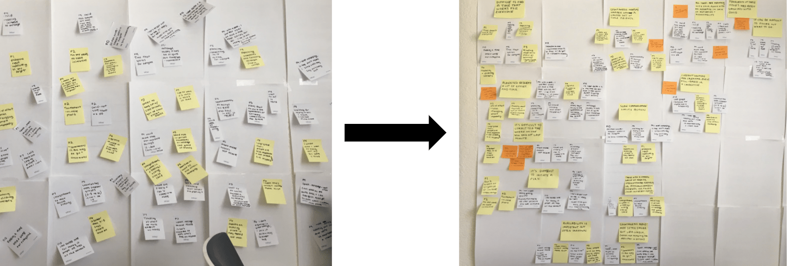
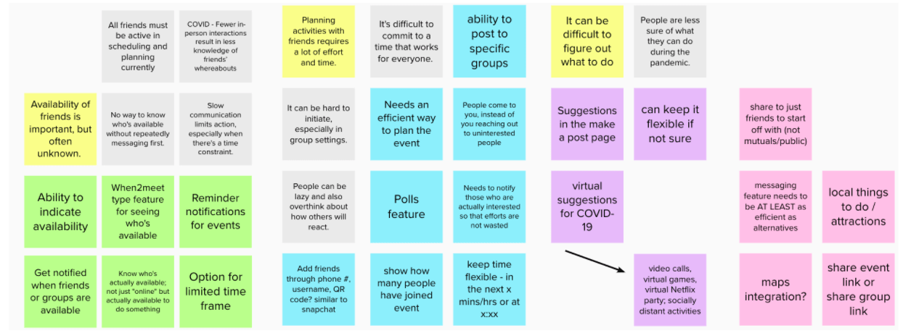
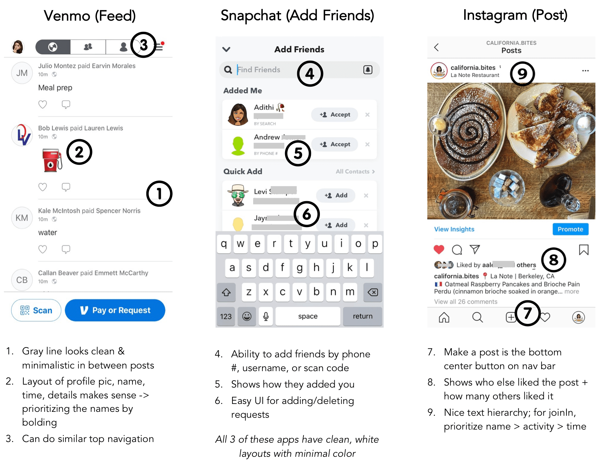
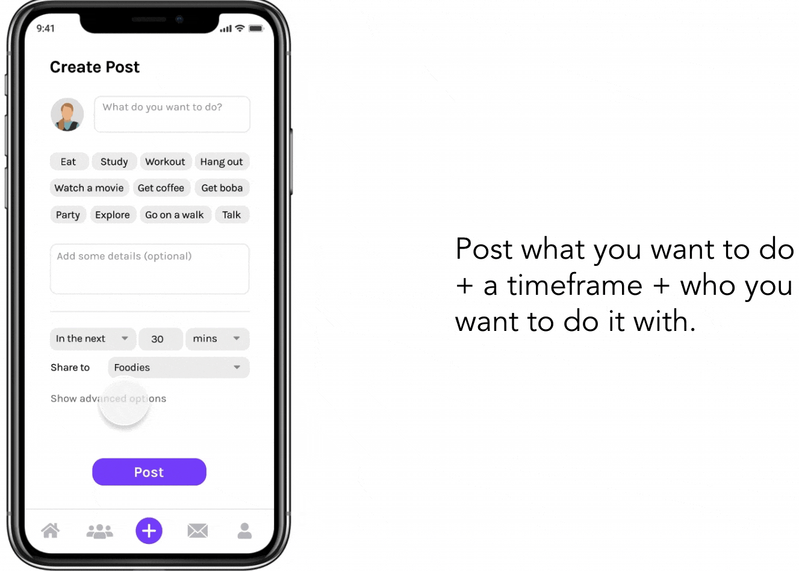
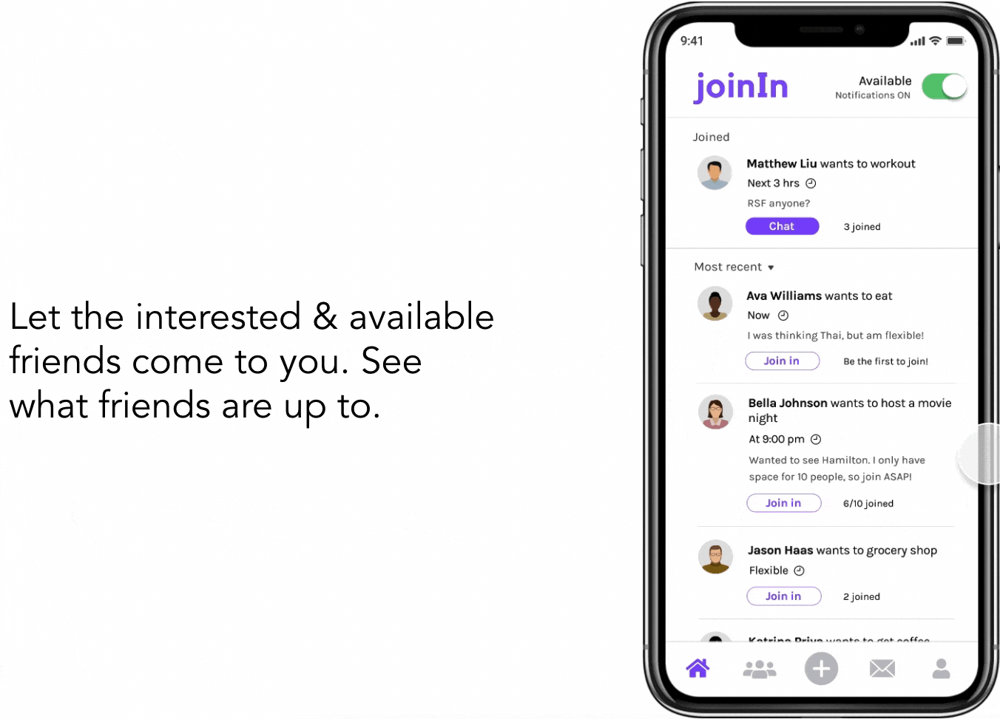
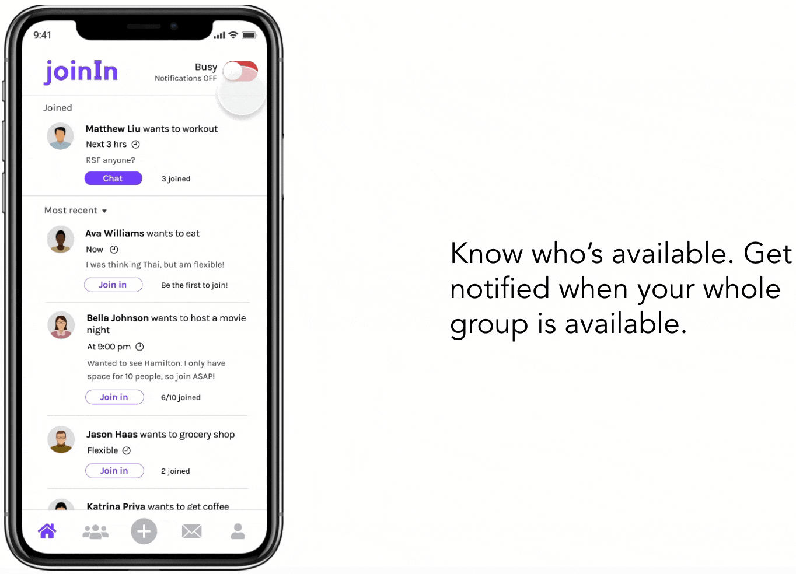
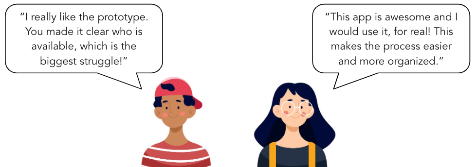
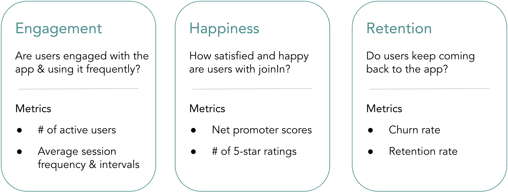

joinIn
Making spontaneous meetups easy.
2 months
I often face the problem of wanting to do an activity with friends, but not knowing who would want to join. Once I realized how frequently I face this problem, I decided to create a solution.
Problem: I want to do something with friends, but don't know who's available or interested in joining me.
Solution: To address this problem, I designed an app where interested and available friends come to you.
1. EXTRACTING USER INSIGHTS
Planning group activities can be difficult without knowing friends' availabilties.
I wanted to see if others faced this problem, and to what extent. I interviewed college students and conducted research on Reddit and Twitter to learn more about user pain points.

Affinity diagramming to cluster observations into insights
Here are a few of the user insights:
- Planning activities with friends requires a lot of effort and time. It's difficult to commit to a time that works for everyone. It can be hard to initiate, especially in group settings.
- Availability of friends is important, but often unknown. There's no way to actually know who's available without repeatedly messaging first. Slow communication limits action, especially when there's a time constraint.
- With fewer in-person interactions during the COVID-19 pandemic, there is less knowledge of friends' availabilities. People are feeling a greater lack of motivation and accountability for social interactions.
2. BRAINSTORMING CONCEPTS
I used user insights to brainstorm features. I looked to popular social apps among college students for visual design inspiration.
I was interested in designing a solution that I could develop myself. I have some iOS app development experience, so I chose to design an app.

Brainstormed app features & design goals based on interview insights
I drew my visual design inspiration from apps that are popular among college students today, such as Venmo, Snapchat, and Instagram.

3. EXPLORING WITH WIREFRAMES
User testing with mid-fidelity wireframes guided the features and layout of the app.

Mid-fidelity wireframes focused on layout
With users' help, I designed an app with the following features:
- A feed that lets you browse through what your friends are up to. Joining an activity just takes one click. The primary function of the app should be straightforward.
- The ability to indicate whether you are available to do something with friends. User research showed that availability of friends is crucial to planning, but often unknown.
- A groups feature that notifies you when your whole group is available. Interviewees complained about planning group activities around multiple different schedules.
4. DESIGNING THE PROTOTYPE
I created the prototype on Figma using modern, sans-serif fonts, and a simple, playful color scheme.



Here's the interactive prototype!
5. RESULTS & REFLECTIONS
90% of user test participants said they would use this app frequently. All users found the app to be easy-to-use and intuitive.

Many users were very excited about the idea and saw themselves using it!
After another design iteration where I address additional details, I plan on beginning to code and develop the actual app.
Eventually, I can measure the success of this app's design using the following metrics:

Takeaways
- Don't ask users to design features; instead, listen to their pain points and see if you can address them through your design.
- I value new perspectives on this project, as I've been working on it by myself for so long. Going forward, I hope to include more people into the design process.
- Start simple - no need to address every single frustration of every potential user.
< previous project - Data Experiences next project - Zest Organics >